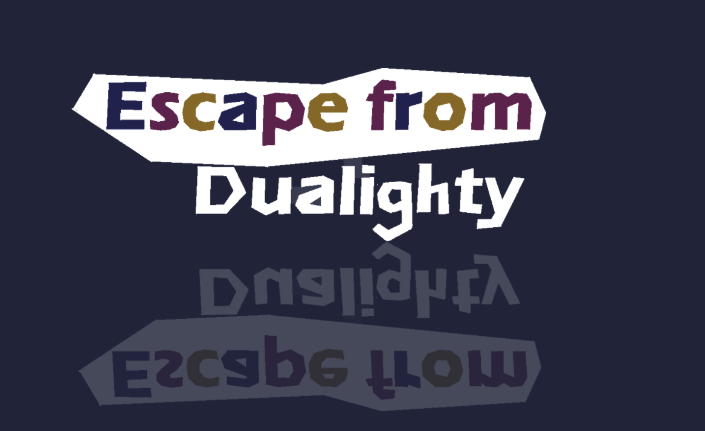
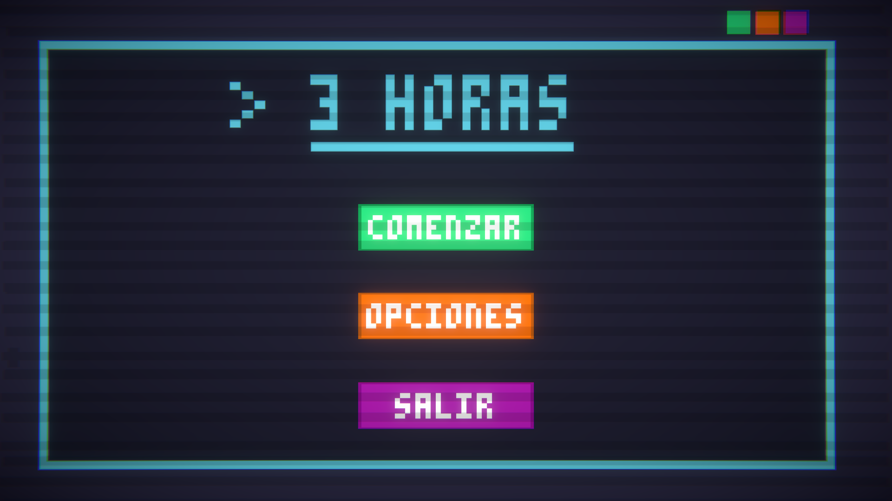
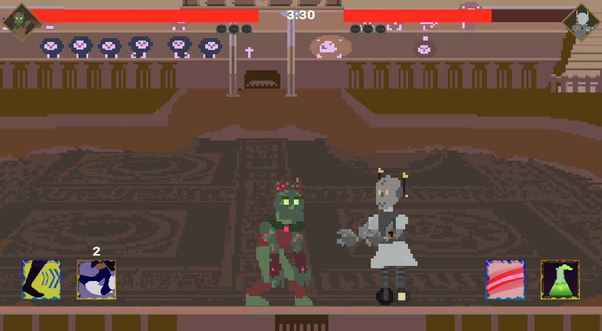
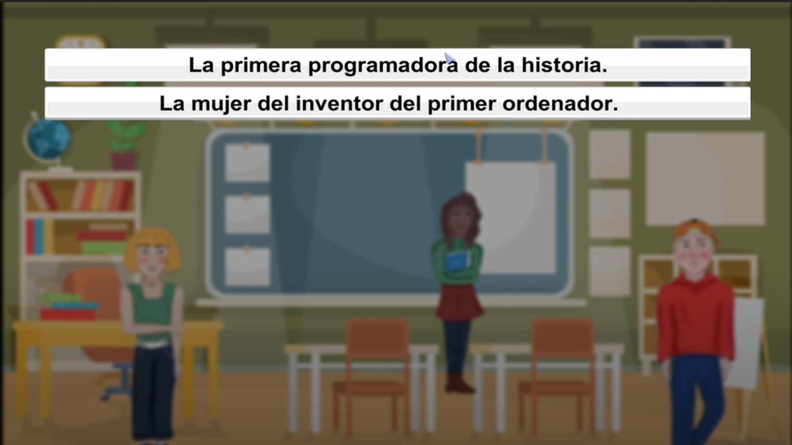
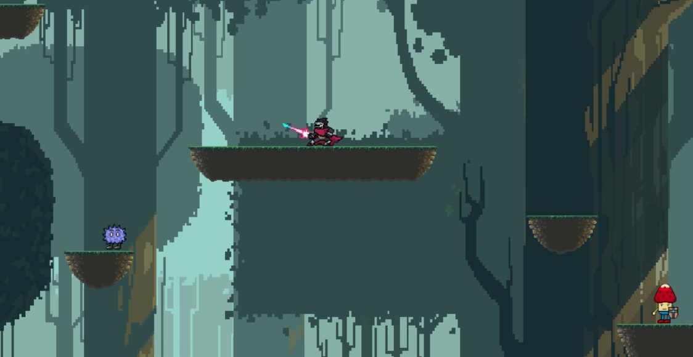

besides of video games I made a game engine and some unity tools too
My games
During all these years I made some games, many of them were during my degree, others are from game jams
Escape from dualighty
(2022)
A game made during the global game jam about resolving puzzles with lights and shadows
roles: UI artist and programmer
3 Horas
(2021)
A game made during the SGD III jam about recruiting people for fighting the robots and reach the unity
roles: UI artist
Fighter Traighter
(2020)
Fighter game made in c++ and SDL.
roles: lead artist and programmer
APTA
(2019 - 2020)
Serious game made in Unity for encouraging women to study enginering studies.
roles: programmer and artist
Soul's taker
(2018)
Metroidvania made in unity with references of hollow knight
roles: programmer
My name is Amparo Rubio Bellón, I am from Madrid (Spain), and I am an enthusiast videogame development student focused in programming and art currently studying at Complutense University of Madrid.
download my resume
My favorite games are games with awesome storys and unexpected narratives. Mother 3, Celeste and 999 are some of them.